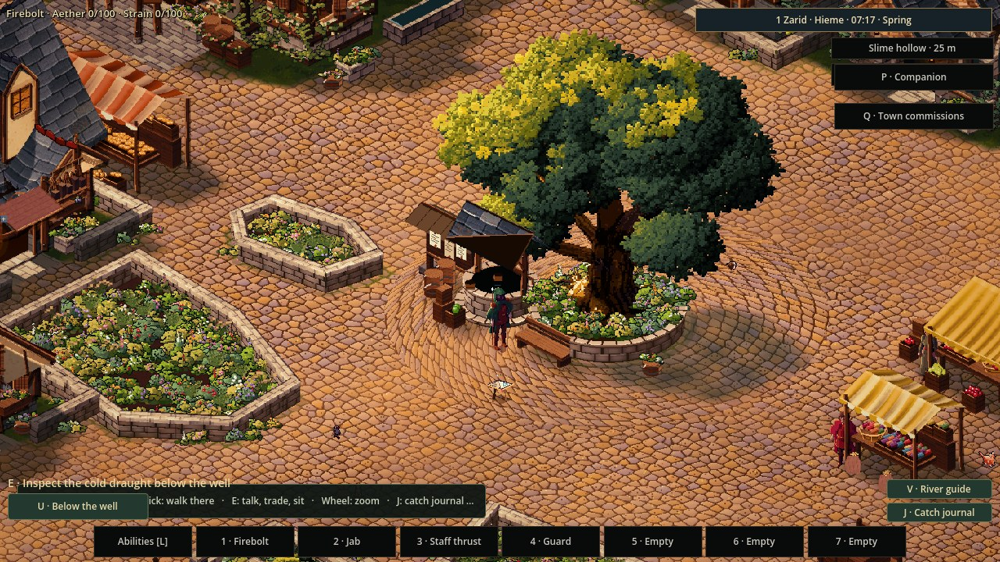
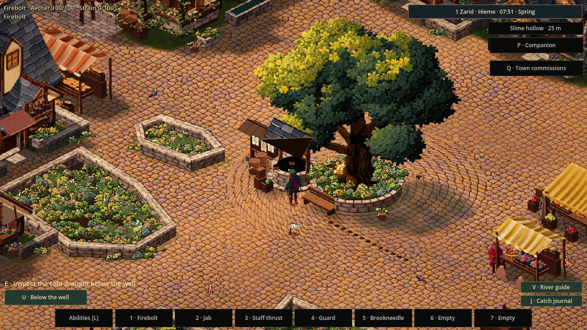
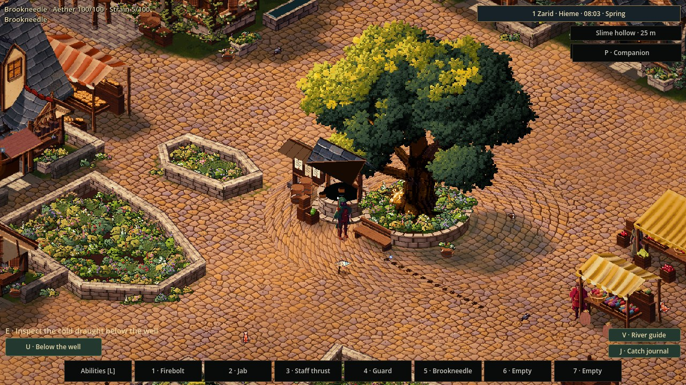
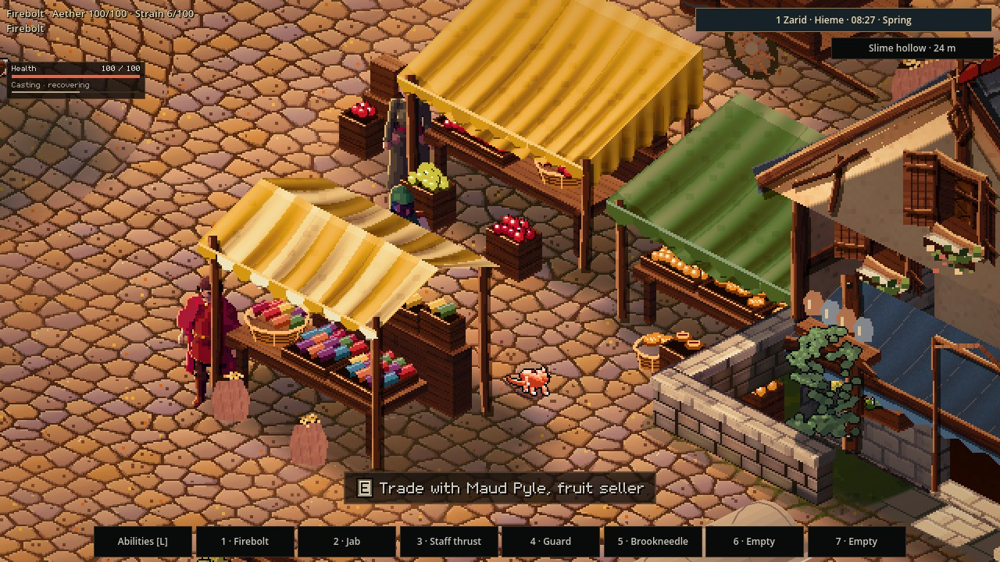

The ground remembers
29 October 2026
A firebolt is gone in a moment. The small dark trail it leaves tells a longer story.
Magic in Sprawl should belong to the place where it happens. This first pass gives fire and water a local aftermath in the playable town. A released fire spell leaves warm, scorched ground. The heat fades first; the blackened trace remains for a while, then wears away.


Another spell can answer it
Water cools a hot trace, briefly raises steam, and washes the scorch into a damp patch. Fire meeting already wet ground makes steam instead of silently burning through it. The marks follow the town's real walls and ground heights, so a spell does not leave a trail inside a house or on a floor beneath its path.

The aftermath comes from ordinary learned abilities. There is no extra button to remember, and it costs nothing beyond the spell already cast. Its damage and the player's movement remain governed by their existing rules.
Small lives notice
The town's ambient animals read the lingering heat. A cat resting nearby can get up and flee; birds and rats avoid hot ground too. Once the heat is gone, those routes become available again. A harmless old scorch does not keep frightening them.

The traces share the saved learning history. Returning does not restart their lifetimes, and waiting through part of the day lets them fade. The first implementation keeps only a small, bounded local history, with separate places and ground heights.
This begins with fire and water and the town's small wildlife. Weather washing traces away, companions making their own decisions around them, and consequences for more essences still lie ahead. The aim is to let a familiar spell leave a readable memory in a familiar place.